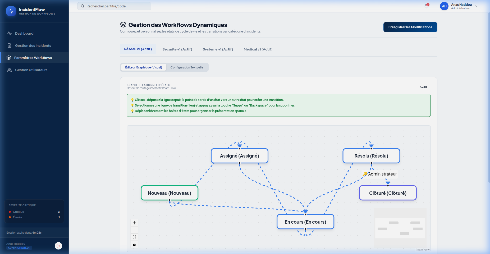

Workflows Dynamiques
Modélisez le cycle de vie de vos incidents à l'aide de l'éditeur interactif ReactFlow.

Nouveau et se terminer par un état final Clôturé. Les états système ne peuvent être ni supprimés, ni désactivés pour garantir l'intégrité de la base de données.
Modes d'Édition
Représente visuellement les états sous forme de boîtes (nœuds) et les transitions sous forme de flèches (arêtes). Vous pouvez créer une transition en reliant les connecteurs des boîtes.
InteractifPermet de renommer précisément les étiquettes des états, choisir leurs couleurs de badges (Vert, Jaune, Rouge, Gris), et déclarer des règles de motif requis.
Formulaire structuréConfiguration des Transitions
L'administrateur peut cocher la case Motif obligatoire pour une transition spécifique. Cela oblige l'opérateur à documenter sa décision avant de valider le changement d'état.
Coordonnées et Positions Graphiques des Nœuds
Dans le composant React, la fonction getInitialNodes place l'état Nouveau à gauche, Clôturé à droite et répartit de façon décalée les autres états intermédiaires :
const getInitialNodes = (states) => {
if (!states) return [];
return states.map((state, index) => {
const isNouveau = state.name.toLowerCase() === 'nouveau';
const isCloture = state.name.toLowerCase() === 'clôturé';
// Détermination des coordonnées x et y
let x = 250;
let y = 150;
if (isNouveau) {
x = 50; y = 150;
} else if (isCloture) {
x = 580; y = 150;
} else {
// Staggering dynamique des états intermédiaires
const others = states.filter(s => s.name !== 'Nouveau' && s.name !== 'Clôturé');
const idx = others.findIndex(o => o.name === state.name);
x = 220 + (idx * 160);
y = 60 + (idx % 2 * 160);
}
return {
id: state.name,
position: { x, y },
data: { label: state.label },
// Customisation du style de boîte...
};
});
};Algorithme de Validation de Graphe (Spring Boot)
Lors de l'enregistrement, la méthode validateWorkflowGraph utilise un parcours en profondeur d'abord (**DFS**) sur le graphe orienté (ainsi que sur le graphe inverse) pour interdire les états inaccessibles ou les impasses :
public void validateWorkflowGraph(Workflow workflow) {
// 1. Validation de l'existence des états critiques "Nouveau" et "Clôturé"
boolean hasNouveau = workflow.getStates().stream().anyMatch(s -> s.getName().equalsIgnoreCase("Nouveau"));
boolean hasCloture = workflow.getStates().stream().anyMatch(s -> s.getName().equalsIgnoreCase("Clôturé"));
if (!hasNouveau || !hasCloture) throw new IllegalArgumentException("Bornes obligatoires absentes.");
// 2. DFS depuis "Nouveau" pour détecter les États Orphelins
Set<String> visitedFromStart = new HashSet<>();
dfs("nouveau", adj, visitedFromStart);
// Si un état n'est pas visité -> Erreur d'état orphelin
// 3. DFS inverse depuis "Clôturé" pour détecter les Impasses (Deadlocks)
Set<String> visitedFromEnd = new HashSet<>();
dfs("clôturé", revAdj, visitedFromEnd);
// Si un état ne peut pas atteindre la fin -> Erreur d'impasse
}Versioning automatique par clonage de version
Si le workflow modifié est déjà lié à des incidents réels en base de données, l'application préserve l'original à des fins historiques et clone le graphe en incrémentant automatiquement le numéro de version :
boolean hasLinkedIncidents = incidentRepository.existsByWorkflowId(workflow.getId());
if (hasLinkedIncidents) {
// Désactiver l'original
original.setActive(false);
// Cloner et créer la Version N+1
Workflow newVersion = new Workflow();
newVersion.setVersion(original.getVersion() + 1);
newVersion.setActive(true);
// Recréer les états et transitions rattachés...
}